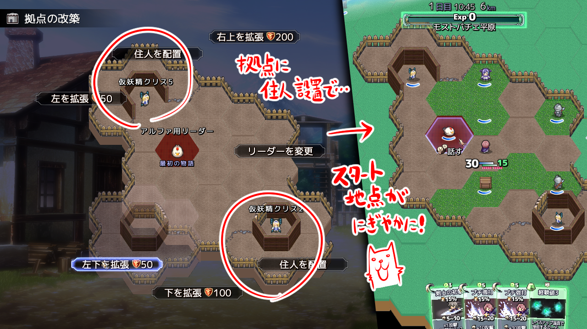
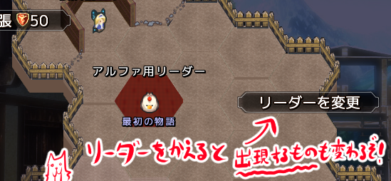
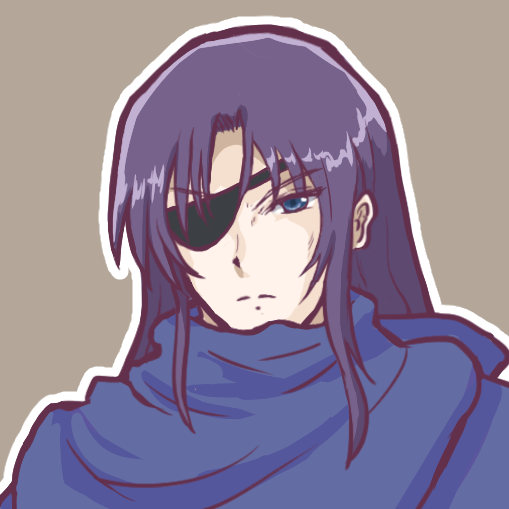
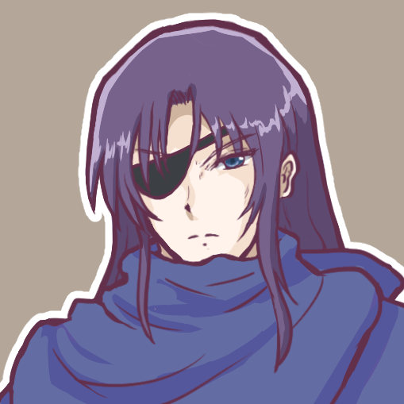
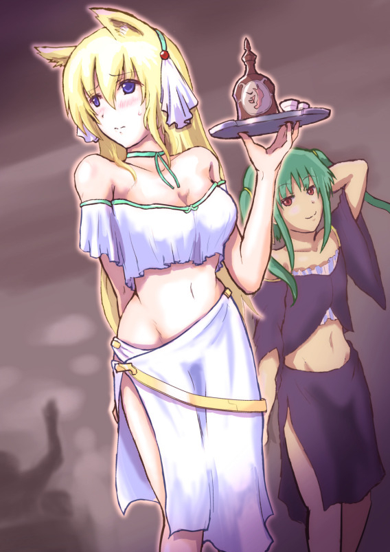
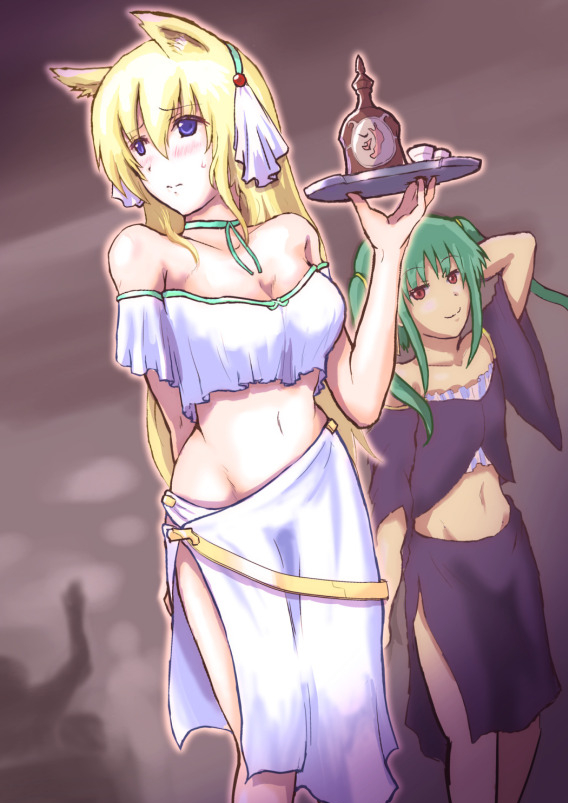

■2023-09-30 (土) 片道勇者2開発+10 拠点改築機能！▼
幸い骨や神経にはダメージがなくて済んだのですが、
安静にしないと辛い状況が続きそうなのでしばらくは治療がんばりたいと思います。
今回は『片道勇者2』の拠点改築機能について！
前作の『片道勇者プラス』にもあったやつですね！
◆片道勇者2 拠点改築機能
【今回の拠点は開拓地！】
ということで今回は拠点の改築機能を作っていました。
マウスとパッド（キーボード）両対応だと1画面作るのにも思ったより
リソースが必要でヒイヒイ言ってましたが、
なんとか前作プラス版っぽい感じで一通り実装！
↓左が拠点画面、右がそれを反映したスタート地点です

今回の拠点は「お城」じゃなくて「開拓地」に集まったような雰囲気で、
前回同様、6箇所を拡張可能することができます。
そして拡張した部分には「住人」を設置でき、色々なサポートを受けられます。
といっても、スタート直後に『闇（強制スクロール）』に拠点ごと
のまれちゃうので、受けられるのは始まった直後のサポートだけなんですけれどね！
この拠点改築システム自体は『片道勇者プラス』開発当時は
「何となく楽しそうだから」と作ったものでしたが、
いまシステム的に見ると非常に便利なシロモノで、
開発者視点だとこのシステムには以下の利点があったように思います。
●冒険のスタートを補助できる。ただしかなり強力なのは自分のリソースと引き換えです。
●プレイヤー自身でお気に入りの住人を設置するのにちょっと愛着が湧く（かも）
●自然にサブストーリーを展開させられる（世界の雰囲気を壊さない）
●スタート直後に普通に全部飲み込まれるので何を置いても便利すぎない。使えるのも初期所持金だけ。
【前作の「住人」を思い起こす】
『片道勇者2』用の住人データはまだ何も設定していませんが、
まずは前作通りの要素を搭載するところから始まるでしょう。
前作いた住人キャラは以下の通り！
●ゲームのアドバイスをしてくれる人
→ いてもいなくてもいい人。
前作では無料で配置できる住人の見本として用意されていた。
●アイテムをくれるキャラ
→ なぜか「叫ぶ根っこ」がいて倒すと回復アイテムになりました。
殴ると「ドゥブッハァ！」などと叫びます。
あとは重いバーベキューセットを押しつけてくる
肉々しいお姉さんもいましたね！ まともな人がいない！
●武器屋・防具屋・薬屋
→ お店。高い品物ばっかり売ってました。序盤を乗り切る用に。
●スキルを教えてくれる人
→ 能力値を支払って、小さな効果のスキルを教えてくれる訓練士がいました。
でも効果は小さくとも職業の能力の幅を広げられるので、
いいポジションだったと思います。
●新たなクエストを開始してくれる人
→ 前作では「忍者クラス解放」クエストや「理騎士クラス解放」クエスト、
「最終決戦」クエストを開始できる住人がいました。
今回も、サブクエストはこの形で始められるようにする予定です。
●協力NPCになってくれる動物
→ 魅力を消費することで協力NPCとして連れて行ける弱い動物仲間がいました。
●ゲーム内の展開を変えられる住人
→ 前作では『桃色の女神像』などがいて、一定距離内に出会う仲間を
指定することが可能でした。が、クリア後しか置けませんでしたね！
「コントロールできすぎるとそれ一択になってプレイ途中の体験の幅が
狭まる場合があるので、そういうのはクリア後などに出したいなー！」
という私のいじわるな欲求があってそうなっていたのですが、
今回は攻略途中でも便利に使えそうな、
「『まだエンドを見ていない仲間キャラ』や、
『倒してないランダムボス』の出現率を大幅に上げてくれる」
という感じの住人も入れたいと考えています。
このくらいの「不自由さ」かつ「狙える度」なら、
便利すぎずに「テンポよく新しい要素を解放したい、見たい」
という需要にも応えやすいかもしれません。
●難易度調整用の住人
→ 最終評価が下がるかわりに10回も女神像を呼び出せる能力を
もらえる『金の女神像』がいました。
解放できる要素の終盤には、こういう明らかな
難易度調整要素も追加していければと思っています。
また、今作では以下も追加を検討しています！
●特定の接頭辞付きの仲間キャラ
→ 今回は高い「カリスマ」を支払うことで、そもそも拠点からでも
「特定の仲間」を加入させられるようにしたいなとほんのり考えています。
たとえば、
『違法なネムリ（仲間にしない場合、危ない肉体改造を頼むことができる）』
とか、
『仲良しのネムリ（前から 深い 知り合いだった、
みたいな文脈になる、仲間にするコスト減少）』
みたいにバリエーション違いの仲間を
設置できるのも面白いかもしれません！
【今回はメインシナリオに関わる「拠点のリーダー」が変更可！】
今回はメインシナリオの進行度を調整する機能として「拠点のリーダー」も変更可能です！

前作だとゲーム開始時の「王様」が「拠点のリーダー」の役割を
担当していましたが、今回はリーダーを変えることで
メインストーリーの段階も変更可能です。
「同じ人物で『接頭辞』だけ違う」という形になるだけかもしれませんが！
ちなみに「メインストーリーの段階」はゲームバランスに影響があって、
メインストーリーを後半にするほど「出現する敵やアイテムや
仲間のバリエーション」が増加するようにするつもりです。
また、「拠点のリーダー」はプレイヤーが変更する必要はなく、
ストーリー進行度が進むと自動でリーダーが入れ替わるようにする予定です。
なので、この機能は「メインストーリーを前に戻す」ためだけのものになるでしょう。
何かしらラクして特定の目標をこなしたい場合などに
メインストーリー進行度を戻すことがあるかもしれません。
たとえば理騎士クエストで「世界の果て」を目指すときみたいにですね！
という感じで、前作よりほんの少し拡張された
「ゲーム進行度調整＆サポート機能」としての拠点システム、
うまく使っていきたいと思います！
2023-09-30 (土)  カテゴリ: 片道勇者2
カテゴリ: 片道勇者2
 カテゴリ: 片道勇者2
カテゴリ: 片道勇者2 
 
